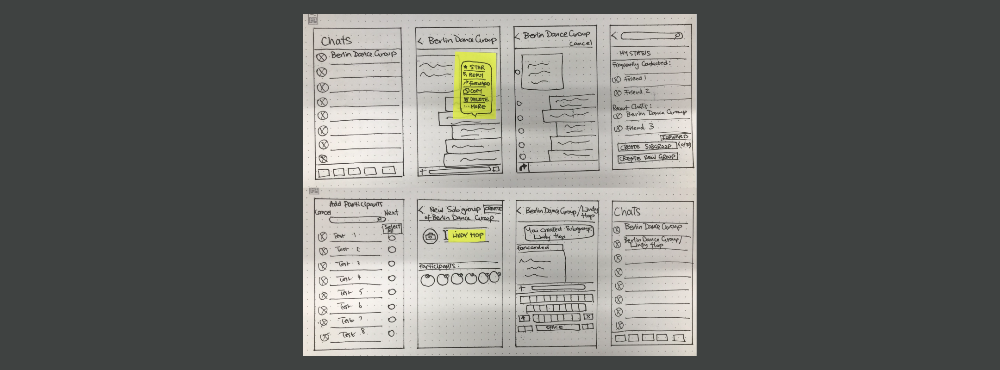
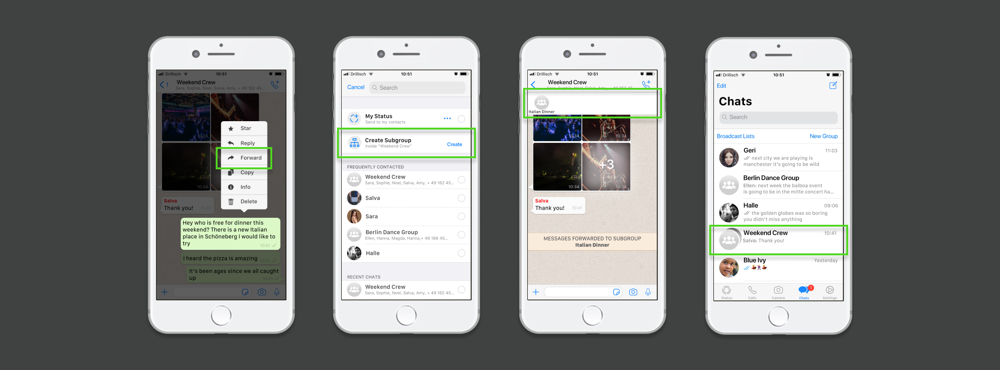

Queer Booth: Augmented Reality
Tools: Figma, Card Sorting, Paper
prototype, Mid-Fi Prototype
Deliverable: Hi-Fi Prototype
This was the final project of the Ironhack UX/UI Design
Bootcamp.
Background
The original Queer Booth app was launched in 2015 by Jo Webber. At the time, photo booth style apps - where you could upload a selfie and try on outfits - were popular and she saw noticed a gap in the market for a version that catered to the LGBTQ+ community.
Aware of the extent of homophobic bullying after working with a youth charity, Jo wanted to normalise queerness and make education fun.
The Queer Booth app was launched successfully in the Apple App Store, however in 2016 Jo paused further development of the app due to lack of resources.

Redesign
Problem
The app needed to be updated to fit current technology - standalone
photo booth apps now take a backseat to the augmented reality (AR)
selfie filters widely found on social
media apps.
It also needed to be updated to match the increased visibility of the LGBTQ+ community. While the original app showcased outfits on what could now be viewed as stereotypes of gay and lesbian identities, Jo wanted the new version to be inclusive for all on the LGBTQ+ spectrum.
It also needed to be updated to match the increased visibility of the LGBTQ+ community. While the original app showcased outfits on what could now be viewed as stereotypes of gay and lesbian identities, Jo wanted the new version to be inclusive for all on the LGBTQ+ spectrum.
Task
Redesign the Queer Booth app for
relaunch.
Jo was quite open to changing the overall design, including the app features and user flow. For the relaunch she said she was inspired by Bitmojis, Facebook Stickers, queer dating apps, and SnapChat selfie filters.
It was important to her that the user experience was quick and seamless, and the pink from the original logo should remain. The target audience should remain Generation Z.
Jo was quite open to changing the overall design, including the app features and user flow. For the relaunch she said she was inspired by Bitmojis, Facebook Stickers, queer dating apps, and SnapChat selfie filters.
It was important to her that the user experience was quick and seamless, and the pink from the original logo should remain. The target audience should remain Generation Z.

Research
Survey
The aim of our survey was to collect
quantitative data from the LGBTQ+
community regarding:
In over 3 days we received over 140 responses to our online survey.
- Self expression of sexual orientation and gender identity in general
- Self expression of sexual orientation and gender identity online
- Attitudes towards taking selfies
- Other apps with LGBTQ+ features
In over 3 days we received over 140 responses to our online survey.
Survey Results
The main trends revealed were:
- 65% of Generation Z participants thought that selfies are a good form of LGBTQ+ self expression.
- 68% of participants share selfies on Messaging Apps
- 50% express their sexual orientation by sharing content online
Interviews
We conducted 8 face-to-face user interviews with LGBTQ+ individuals
to gather further
qualitative information regarding LGBTQ+
self expression online.
Collating and interpreting the the qualitive data was perhaps the most challenging part of this project. The interviewiees' attitudes varied, depending on each individual's background and their stage of "coming out" or self expression. Nonethless we wanted our solution to be inclusive of all the opinions heard.
After an intense card sorting session, Hanna and I narrowed down two major areas of concern:
Collating and interpreting the the qualitive data was perhaps the most challenging part of this project. The interviewiees' attitudes varied, depending on each individual's background and their stage of "coming out" or self expression. Nonethless we wanted our solution to be inclusive of all the opinions heard.
After an intense card sorting session, Hanna and I narrowed down two major areas of concern:
- Self Expression
- Representation
How Might We
Social media apps play a large role in
representation for the LGBTQ+ community,
and the people that needed the most
visiblity online were the ones just
starting their journey, as expressed by this interviewee:
"Many people are not comfortable expressing (their sexuality). But it’s still important to feel represented by someone you can relate to."After voting on "How Might We" statements related to the two main areas of concern, the statement with the highest votes was:
How might we allow users to share their stories?
Users & Market
User Personas
For the primary user persona we created
"Nick", who represents a Generation Z user
who searches for LGBTQ+ connection online.
For the user persona we created "Vivien", who represents a Millenial user who uses her online presence to promote LGBTQ+ issues.
For the user persona we created "Vivien", who represents a Millenial user who uses her online presence to promote LGBTQ+ issues.
Market Positioning
To upgrade the app for 2020, selfie filters were the way forward. An
analysis of the most used apps with this feature, revealed that that
the closest competitor for the Queer Booth
relaunch would be TikTok.
LGBTQ+ users feel safer using TikTok, as their parents aren’t using it yet. Compared to Instagram, TikTok is more a social entertainment platform than social media.
Our aim was to create the new Queer Booth app as a place to share stories without judgement, with LGBTQ+ themed selfie filters. So users can express their inner and outer selves.
LGBTQ+ users feel safer using TikTok, as their parents aren’t using it yet. Compared to Instagram, TikTok is more a social entertainment platform than social media.
Our aim was to create the new Queer Booth app as a place to share stories without judgement, with LGBTQ+ themed selfie filters. So users can express their inner and outer selves.
Features
AR Selfie Filters
From our interviews, top requests for filters included:
Pride and celebrity themed filters. Asked
to name their LGBTQ+ celebrity icons, many interviewees (across all
identities) suggested popstar Lady Gaga.
In order to prototype the selfie filter feature, we looked into Spark AR Studio - a Facebook developed software used for creating AR effects for Facebook and Instagram. Hanna and I gave ourselves one weekend to learn how to use Spark AR - failing that we would have to borrow already existing selfie filters and move on.
Without any prior animation experience, Hanna and I put our trust in YouTube, and after watching a few tutorials we gradually started to make progress with Spark AR. By the end of the weekend we had 5 effects ready to go.
In order to prototype the selfie filter feature, we looked into Spark AR Studio - a Facebook developed software used for creating AR effects for Facebook and Instagram. Hanna and I gave ourselves one weekend to learn how to use Spark AR - failing that we would have to borrow already existing selfie filters and move on.
Without any prior animation experience, Hanna and I put our trust in YouTube, and after watching a few tutorials we gradually started to make progress with Spark AR. By the end of the weekend we had 5 effects ready to go.
Sharing Stories
For many LGBTQ+ people,
starting to explore and express their
identities is done carefully, either because they are still unsure,
or because their social or family environment makes expression
difficult.
We imagined ways that users could share experiences, and find solidarity, in a safe environment. We thought that a feature allowing users to share stories anonymously would be a good way to do this, similar to PostSecret confessions.
In order to find similar features developed for mobile (PostSecret is currenly only on desktop) , we researched other anonymous social media apps used Generation Z, including Whisper and Jodel,
We imagined ways that users could share experiences, and find solidarity, in a safe environment. We thought that a feature allowing users to share stories anonymously would be a good way to do this, similar to PostSecret confessions.
In order to find similar features developed for mobile (PostSecret is currenly only on desktop) , we researched other anonymous social media apps used Generation Z, including Whisper and Jodel,
Iterations
App Concept
While users were family with the two main features separately, we
needed to make the concept of why we combined the two features
together clearer. We tested various ways to integrate the selfie
filters and sharing stories features in a seamless way.
We developed the three card introduction to show upon app launch.
We developed the three card introduction to show upon app launch.
User Security
One negative aspect of anonymous social media is that it can be a
breeding ground for bullying. After considering requiring parental
consent for sign-up, we instead implemented a self regulating
minimum age of 12 years old, so users could feel free to express
themselves privately.
Like other anonymous social networks, there is an anonymous use ID, and no email address or phone number is required to sign-up. All user data is stored in the app.
Unlike some other anonymous social networks, we decided against a private messaging feature (users may only publicy post comments). Keeping comments public would also help to regulate bullying.
Like other anonymous social networks, there is an anonymous use ID, and no email address or phone number is required to sign-up. All user data is stored in the app.
Unlike some other anonymous social networks, we decided against a private messaging feature (users may only publicy post comments). Keeping comments public would also help to regulate bullying.
Feature Naming
We wanted to find names for our two main features that would be
memorable, and also be easy to understand for new users. Keeping
with the "Booth" theme, one working version we had was:
After further testing we decided on our final version:
- Photo Booth
- Confession Booth
After further testing we decided on our final version:
- Photo Booth
- Story Booth
User Flow
For the user flow of the Story Booth, we took inspiration from
Facebook and instagram. Two widely used, well-known, and intuitive
interfaces. We decided to use the "feed" as a start page, where
users can scroll quickly through posts. Users can click to expand
the and read more of a post. And each post has the option to be
bookmarked or liked.
In order to reach the camera with selfie filter options, users have to swipe left. As with Instagram, users have the option to scroll through selfie filters by swiping, and then save each photo to their phone if desired.
In order to go back to the feed, users have to swipe back left.
In order to reach the camera with selfie filter options, users have to swipe left. As with Instagram, users have the option to scroll through selfie filters by swiping, and then save each photo to their phone if desired.
In order to go back to the feed, users have to swipe back left.
UI
Typography & Colour
For the logo and header fonts we chose Gilbert, which was created in
the memory of Gilbert Baker who was the creator of the rainbow flag.
We used both the rainbow, and black versions. For the text
description font, we chose Poppins regular in two sizes.
According to stakeholder wishes, we kept hot pink as a prominent colour in the font, and as a highlight colour in the body of the app. After testing both light and dark versions, we went with a nearly background in order to make the rainbow colours of the logo, and of the confessions, stand out more.
According to stakeholder wishes, we kept hot pink as a prominent colour in the font, and as a highlight colour in the body of the app. After testing both light and dark versions, we went with a nearly background in order to make the rainbow colours of the logo, and of the confessions, stand out more.
Story Feed
For the Story Booth feed and introduction cards we used three icons
from the
Detective-Glyph
collection for the main menu:
-
 Photo Booth
Photo Booth
-
 Story Booth
Story Booth
-
 User Account
User Account
Prototype